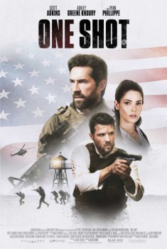

One Shot (2021)


Saving a prisoner to save the world.

Etiquetas:Conspiracy ThrillerActionAdventureCrimeThrillerWar
País:Reino Unido, 96 minutos.
Idiomas:Inglés, Francés
GénerosAcción, Aventuras, Policial, Suspenso, Bélica
Director/es:
Guionistas:
Códec de vídeo:Unknown
Número: 3855
TomatoMeter:

--

--
Clasificación IMDb:


5.7/10 (7.4K votos)
Certificación:
Argumento:
An elite squad of Navy SEALs, on a covert mission to transport a prisoner off a CIA black site island prison, are trapped when insurgents attack while trying to rescue the same prisoner.
Reparto
Medio: Archivo de video,
Localización: D:\PELICULAS\ACTORES\Scotts Addkins\One Shot [2021] [1080p] [Dual Audio] [1,95 Gb] (Scotts Addkins)\Última Bala [2021] [1080p] [Dual Audio].avi
Prestado: No
Rel. aspecto: Unknown